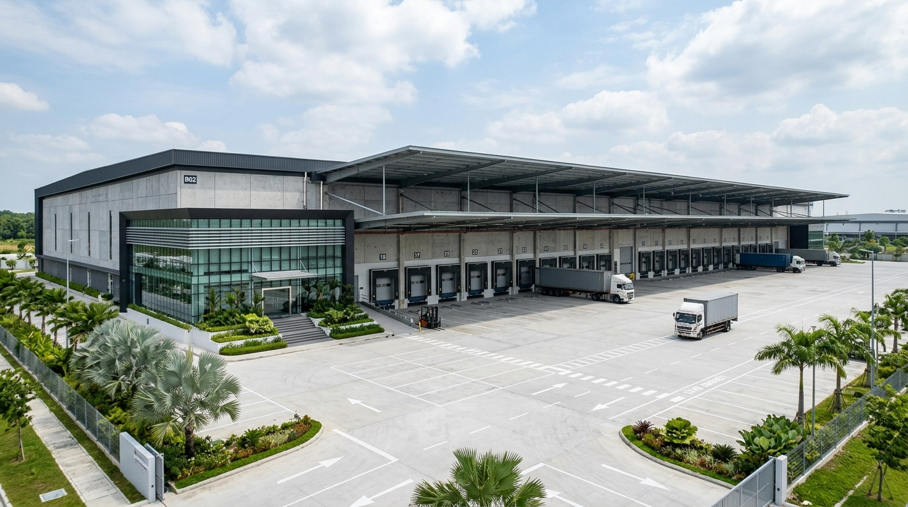
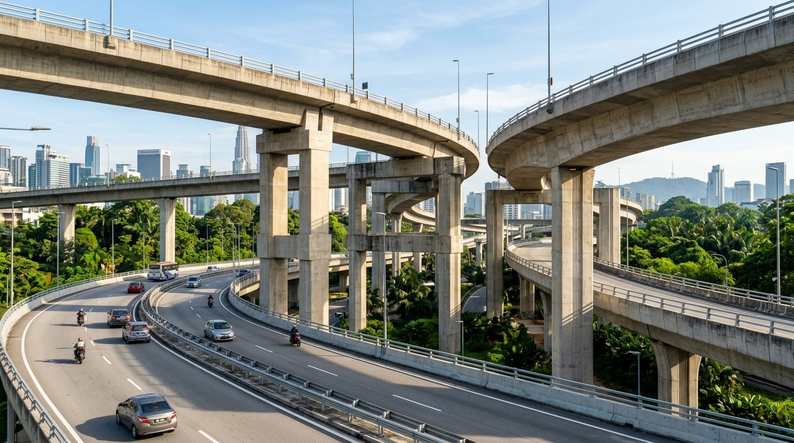

Commercial
Commercial
Menara Sentral Business Tower (Sample Project)
Demonstration 28-story corporate office tower featuring post-tensioned floor slabs, deep navy aluminum sun-shading fins, and a landscaped civic arrival plaza.
Demonstration Data: Sample projects shown for academic UTS presentation, not real corporate contracts.
Commercial
Demonstration 28-story corporate office tower featuring post-tensioned floor slabs, deep navy aluminum sun-shading fins, and a landscaped civic arrival plaza.
 Residential
Residential
Demonstration low-rise residential enclave designed around shaded communal courtyards, cross-ventilated unit layouts, and weather-resistant precast concrete facades.

IndustrialDemonstration regional warehousing and light-manufacturing hub engineered with heavy-duty concrete aprons, wide cantilevered loading canopies, and attached administrative offices.

InfrastructureDemonstration civil infrastructure package comprising reinforced concrete portal piers, curved elevated highway ramps, and multi-tier interchange deck spans for regional traffic connectivity.